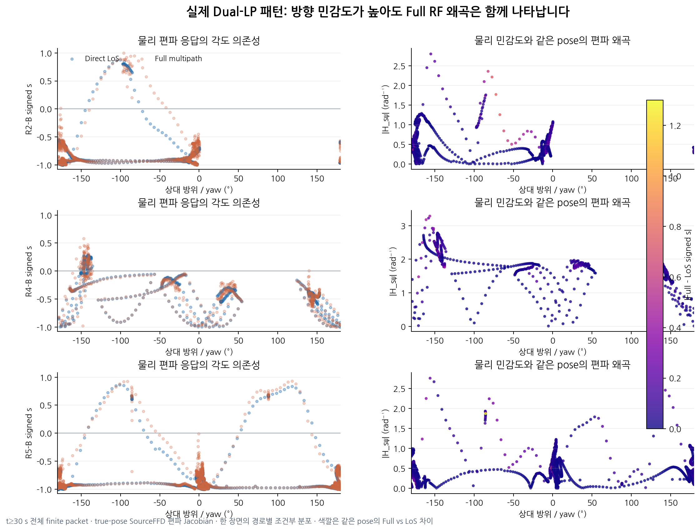
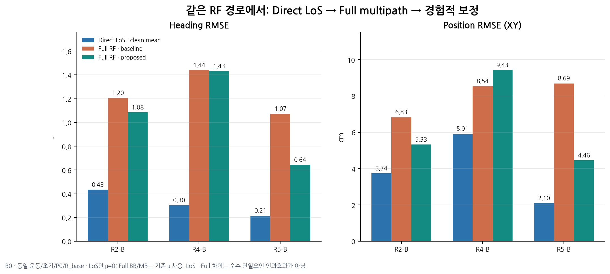
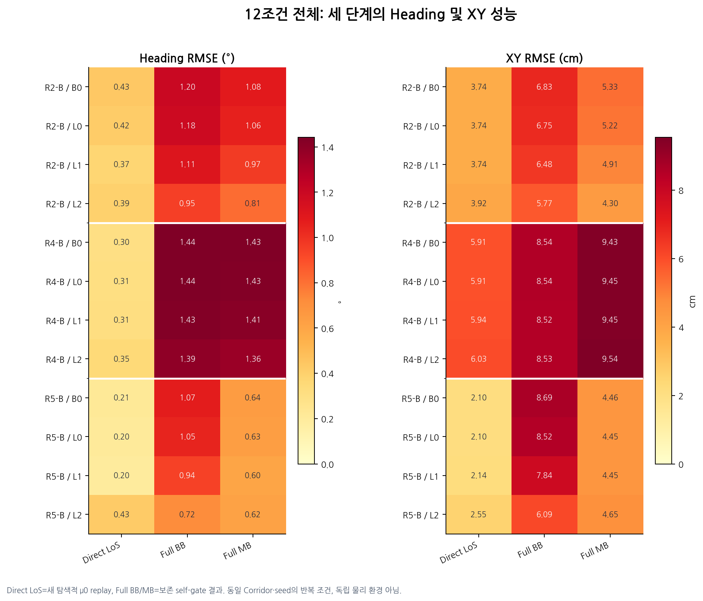
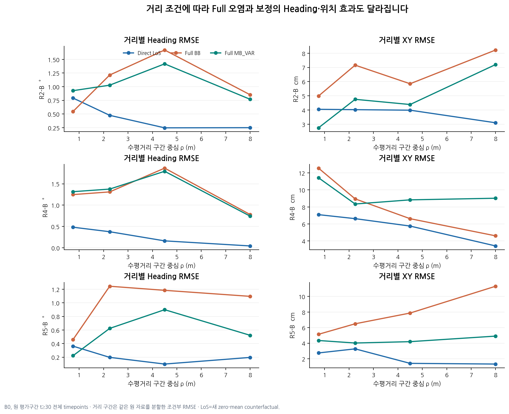

해석 제한 — LoS 새 기준선은 μ=0으로 재귀 계산한 탐색적 결과이며 Full BB의 기존 학습 μ와 다릅니다. 세 단계의 성능 간격 전부를 다중경로만의 인과효과로 사용하면 안 됩니다. 원본 H와 동일 평균을 쓴 LoS 비교는 마지막 통제 그림에 있습니다.
관측 기준과 다중경로 변화


기하·거리·시간별 원인 지표


모델 개입과 실제 추정 결과


세 단계 성능과 12조건







PNG 확대 · SVG 벡터 · F12_DISTANCE_CONDITIONED_3_STAGE_PERFORMANCE